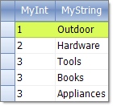

Binding to Generic Lists
Binding to Lists of Simple Types
Generally, you should not try to bind RadGridView to a list of simple types.
RadGridView internally creates columns and reads data for the properties of the objects it is bound to.
However, the integer type, for example does not have any properties so if you try to bind RadGridView to a List of integers,
you will get no data. Following the same logic, if you bind RadGridView to a collection of strings, you will get a column
representing the length of these strings, because the only property of a string object is the Length property.

[C#] Binding to list of simple types
List<string> list = new List<string>();
list.Add("One");
list.Add("Two");
list.Add("Three");
radGridView1.DataSource = list;
[VB.NET] Binding to list of simple types
Dim list As New List(Of String)()
list.Add("One")
list.Add("Two")
list.Add("Three")
RadGridView1.DataSource = list
Binding to Lists of Objects
Generic Lists of objects containing bindable types can be bound to RadGridView by assigning the List to the __DataSource__property of the grid.
The example below defines a "MyObject" class containing one integer and one string property. The next set of code snippets "Creating an List of Objects" creates an array of MyObject, initializes the array and assigns the array to the DataSource. The MyObject class would typically be placed in its own separate class file and the List creation, initialization and assignment code might be placed in a Form_Load event handler.
[C#] Creating object of simple type
public class MyObject
{
public MyObject(int myInt, string myString)
{
_myInt = myInt;
_myString = myString;
}
private int _myInt;
public int MyInt
{
get { return _myInt; }
set { _myInt = value; }
}
private string _myString;
public string MyString
{
get { return _myString; }
set { _myString = value; }
}
}
[VB.NET] Creating object of simple type
Public Class MyObject
Public Sub New(ByVal myInt As Integer, ByVal myString As String)
_myInt = myInt
_myString = myString
End Sub
Private _myInt As Integer
Public Property MyInt() As Integer
Get
Return _myInt
End Get
Set(ByVal value As Integer)
_myInt = value
End Set
End Property
Private _myString As String
Public Property MyString() As String
Get
Return _myString
End Get
Set(ByVal value As String)
_myString = value
End Set
End Property
End Class
[C#] Binding to list of simple types
List<MyObject> myList = new List<MyObject>();
myList.Add(new MyObject(1, "Outdoor"));
myList.Add(new MyObject(2, "Hardware"));
myList.Add(new MyObject(3, "Tools"));
myList.Add(new MyObject(4, "Books"));
myList.Add(new MyObject(5, "Appliances"));
radGridView1.DataSource = myList;
[VB.NET] Binding to list of simple types
Dim myList As New List(Of MyObject)()
myList.Add(New MyObject(1, "Outdoor"))
myList.Add(New MyObject(2, "Hardware"))
myList.Add(New MyObject(3, "Tools"))
myList.Add(New MyObject(4, "Books"))
myList.Add(New MyObject(5, "Appliances"))
RadGridView1.DataSource = myList